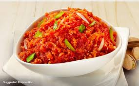

Gajar Ka Halwa

Description
Gajar ka halwa is particularly popular in North India during winter months when carrots are in season. It's often
prepared for festivals and special occasions.
The dessert is known for its vibrant orange color and comforting warmth. Its preparation involves slow-cooking,
which
reduces the milk and caramelizes the carrots, intensifying the flavors.
Ingredients
- 2 tablespoons ghee or oil
- 2 pounds carrots, grated
- 1 ½ quarts whole milk
- 2 cups white sugar
- ½ cup raisins or sultanas
- 1 ½ teaspoons ground cardamom
- 1 pinch saffron threads
- 8 tablespoons chopped pistachio nuts
Steps
- Heat ghee in a large saucepan over medium heat and add carrots. Cook and stir briefly, about 3 minutes. Pour in milk and
increase heat; bring to a boil and cook, stirring constantly, for 5 minutes. Reduce heat to low and simmer gently,
uncovered, and stirring occasionally until moisture evaporates, about 1 hour.
- Bring carrot mixture back to a boil; add sugar, raisins, cardamom, and saffron. Cook and stir until mixture has
thickened, about 10 minutes.
- Ladle carrot halwa into 8 individual serving dishes. Top each serving with 1 tablespoon pistachios. Serve warm or chill
before serving.